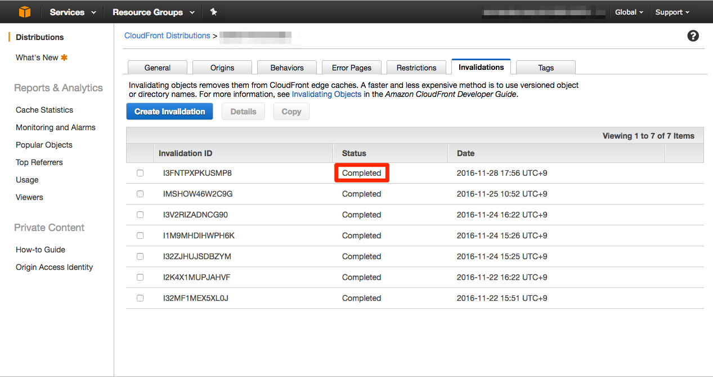

Delete Amazon Cloud Front Cache(Invalidation)
删除Amazon Cloud Front的缓存(Invalidation)
什么是 Amazon CloudFront
Amazon CloudFront 是一种全球内容分发网络服务，可以安全地以低延迟和高传输速度向浏览者分发数据、视频、应用程序和 API。CloudFront 与 AWS 与多种 AWS 产品集成。
Amazon CloudFront是怎么运作的
举例说明，当客户端发起对 www.customer.com 的访问时，首先需要 DNS 系统解析出该域名对应的主机 IP，通过本地 ISP DNS 递归查询到 customer.com 的 DNS 域名服务器并了解到该域名是指向了 xxx.cloudfront.net ，进一步解析 xxx.cloudfront.net ，CloudFront 的 DNS 域名服务器会根据请求来源的 IP 等信息，返回适合当前该客户端访问的边缘节点的主机 IP 如 1.1.1.1，最终该客户端向 1.1.1.1 发出请求。如果该边缘节点已经缓存了该客户端请求的内容（图片、视频等静态文件），则直接返回给客户端，如果未缓存，则首先回源取回该内容，并存储在边缘节点，以便下次客户端对该内容请求时可以直接返回该内容。
什么是Invalidation
Invalidation是用于删除CloudFront的边缘节点主机的缓存功能。
如何删除缓存
1.打开该CloudFront的控制台。
2.选择Invalidations，并点击「Create Invalidation」按钮。
3.指定你所想删除的对象的缓存路径。
能够使用wildcard，所以如果你想删除所有的缓存的时候可以使用wildcard，像下面这样输入/*就好,然后点击「Invalidate」按钮。
点击后就可以发现界面上被追加了一行，Status这一列的状态变成了In Progress。
如果缓存被删除完成，Status就会变成Completed.

总结
Invalidation删除功能是指删除你所指定的对象的缓存，并不影响缓存以后的保存。
Invalidation指定后，所显示的行是删除历史记录，这个历史记录是不能被删除的。
这个删除并不会改变该对象的缓存保存的设定，当缓存重新生成之后，还是会被重新保存的。